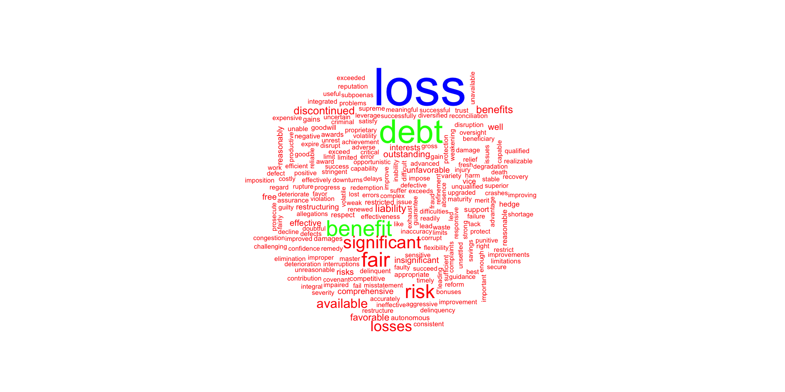
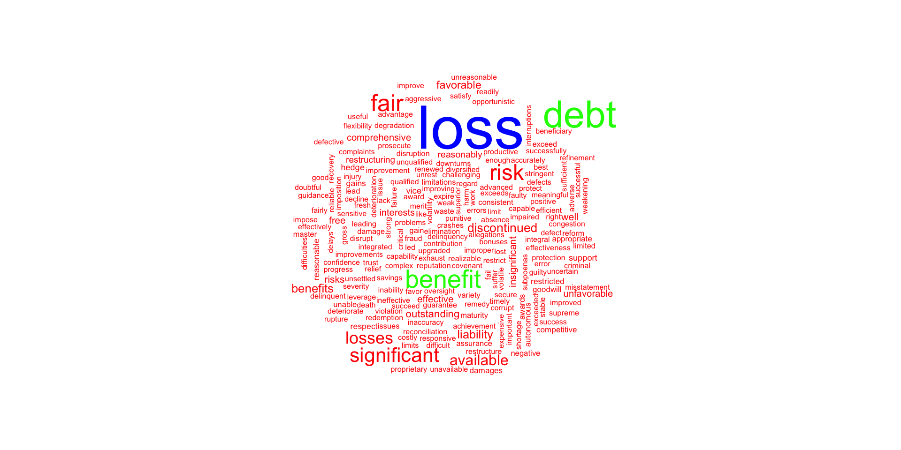
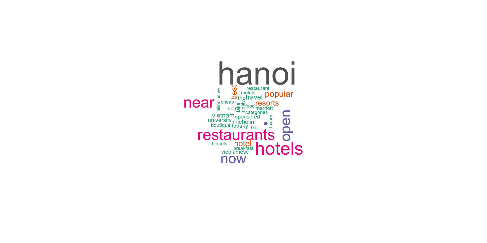

pacman::p_load(tidyverse, kableExtra)
pacman::p_load(tidytext, textdata, htm2txt, tokenizers, wordcloud, rvest)
pacman::p_load_gh("mkearney/rtweet", "hrbrmstr/seymour","mkearney/newsAPI")
pacman::p_load(maps, tm, SnowballC, RColorBrewer, RCurl, stringr, httr, XML)外国書購読 Day7
Chapter 6.
Analytical Review: Intelligence Scanning
Soichi Matsuura
2024-11-20
本日の学習内容
- HTML / CSS / XPath
- Chapter 6. Analytical Review: Intelligence Scanning
講義の最初に，ウェブサイトの仕組みを簡単に説明し，ウェブ・スクレイピングのための基礎知識を整理します。
packages
I use pacman::p_load() to install packages from CRAN and pacman::p_load_gh() from GitHub.
事前準備
ウェブスクレイピングについて学習する前に、必要な知識を整理します。
- HTML / CSS
- XPath
これらの知識があると、ウェブサイトから必要なデータを取得することができます。
HTML
- HTML(HyperText Markup Language)は、Webページの内容を記述するためのマークアップ言語です。
- 基本的には、タグという記号を使って、テキストや画像などの要素を囲むことで、その要素の意味を示します。
CSS
- CSS(Cascading Style Sheets)は、Webページの見た目を指定するための言語です。
- HTMLで記述された要素に対して、色や大きさ、位置などのスタイルを指定することができます。
とすると、<h1>タグで囲まれたテキストが青色になり、フォントサイズが24pxになります。
XPath
- XPathは、XML文書の中から要素を選択するための言語です。
- XPathは、XML文書の構造を辿りながら、要素を指定することができます。
- XPathは、Webスクレイピングの際に、特定の要素を取得するために使用されます。
- XPathは、HTML文書にも適用することができます。
HTMLの表
- HTMLの表は、
<table>タグで囲まれた要素で構成されます。 - 表の行は
<tr>タグで、列は<td>タグで囲まれます。 - 表の見出しは
<th>タグで囲まれます。
<table id="namelist">
<caption>
表1: 名前のリスト
</caption>
<thead>
<tr>
<th>氏名</th><th>属性</th><th>年齢</th>
</tr>
</thead>
<tbody>
<tr>
<td>Chris</td><td>HTML tables</td><td>22</td>
</tr>
<tr>
<td>Dennis</td><td>Web accessibility</td><td>45</td>
</tr>
<tr>
<td>Sarah</td><td>JavaScript frameworks</td><td>29</td>
</tr>
<tr>
<td>Karen</td><td>Web performance</td><td>36</td>
</tr>
</tbody>
</table>表を抽出 | table
Wikipeidaのページから表を抽出します。
pacman::p_load(rvest,tidyverse, knitr, kableExtra)
url_akb <- "https://ja.wikipedia.org/wiki/AKB48"
AKB_table <- url_akb |> read_html() |> html_nodes("table") |> html_table(fill = T)
AKB_table[[9]] |> as_tibble() |>head(10) |>
kable(format="html") |> kable_styling(font_size = 10)| 名前 | よみ | 生年月日 | 出身地 | 加入期 | 所属事務所 | 昇格日 | 備考 | 総選挙最高順位 |
|---|---|---|---|---|---|---|---|---|
| 岩立沙穂 | いわたて さほ | (1994-10-04) 1994年10月4日（30歳） | 神奈川県 | 13期 | TRUSTAR | 2013年8月24日 | AKB48最年長元チーム4（'13/'14峯岸・高橋朱里）元チームB（高橋朱里・岩立）元チームB（岩立）キャプテン元チームA（向井地） | 22位 |
| 村山彩希 | むらやま ゆいり | (1997-06-15) 1997年6月15日（27歳） | 神奈川県 | 13期 | エイベックス・アスナロ・カンパニー | 2013年8月24日 | 元チーム4（'13/'14峯岸・高橋朱里・村山・倉野尾）元チーム4（村山）キャプテン | - |
| 込山榛香 | こみやま はるか | (1998-09-12) 1998年9月12日（26歳） | 千葉県 | 15期 | ディープスキル | 2014年4月24日 | 2025年2月卒業予定[237][238]元チーム4（'14峯岸・高橋朱里）元チームK（込山）元チームK（込山）キャプテン元チームA（向井地） | 21位 |
| 福岡聖菜 | ふくおか せいな | (2000-08-01) 2000年8月1日（24歳） | 神奈川県 | 15期 | トキエンタテインメント | 2014年4月24日 | 元チームB（倉持・木﨑・高橋朱里・岩立）元チームA（向井地） | 31位 |
| 向井地美音 | むかいち みおん | (1998-01-29) 1998年1月29日（26歳） | 埼玉県 | 15期 | Mama&Son | 2014年4月24日 | 元AKB48グループ総監督（3代目）元チーム4（'14峯岸）元チームK（峯岸）元チームA（岡部・向井地）元チームA（向井地）キャプテン | 13位 |
| 小栗有以 | おぐり ゆい | (2001-12-26) 2001年12月26日（22歳） | 東京都 | - | ゼスト | - | 元チーム8東京都代表元チームA（岡部）兼任元チームB（浅井）兼任元チームB（浅井） | 25位 |
| 倉野尾成美 | くらのお なるみ | (2000-11-08) 2000年11月8日（24歳） | 熊本県 | - | DH | - | AKB48グループ総監督（4代目）元チーム8熊本県代表元チームK（込山）兼任元チーム4（倉野尾）元チーム4（倉野尾）キャプテン | 30位 |
| 坂川陽香 | さかがわ ひゆか | (2006-10-07) 2006年10月7日（18歳） | 福井県 | - | DH | - | 元チーム8福井県代表（2代目）元チーム4（倉野尾）兼任元チーム4（倉野尾） | - |
| 下尾みう | したお みう | (2001-04-03) 2001年4月3日（23歳） | 山口県 | - | Superball | - | 元チーム8山口県代表元チームA（岡部）兼任元チーム4（倉野尾）兼任元チーム4（倉野尾） | - |
| 髙橋彩音 | たかはし あやね | (1997-12-30) 1997年12月30日（26歳） | 埼玉県 | - | アリゲーター[133] | - | 元チーム8埼玉県代表元チーム4（村山）兼任元チームK（田口）兼任元チームK（田口） | - |
表を抽出 | xpath
url <- read_html("HTML/gaisho.html")
url |>html_node(xpath = '//*[@id="namelist"]') |>
html_table(fill = T) |>
as_tibble() |> kable()| 氏名 | 属性 | 年齢 |
|---|---|---|
| Chris | HTML tables | 22 |
| Dennis | Web accessibility | 45 |
| Sarah | JavaScript frameworks | 29 |
| Karen | Web performance | 36 |
ここで，xpath = '//*[@id="namelist"]'は，id="namelist"という属性を持つ要素を指定しています。
Intelligence Scanning of Internet Resources
Analytical Procedures
- Analytical procedures involve the study of plausible relationships between both financial and non-financial data.
- Before the mid-2000s, sources of such information were spotty, unreliable, and scarce, and that, indeed, was considered a prime reason for markets needing annual, audited financial statements.
- Today, there are numerous social networks, news, and discussion boards that offer both raw and curated, streaming sources of useful business intelligence.
- The auditor who does not scan for such client and industry intelligence both increases the cost of auditing, and can be considered negligent in not investigating all available information about the financial health of their client.
- Though this information is available, the raw information itself may need considerable interpretation and processing before an auditor may rely on it for audit work.
- The most useful information for analytical review may be qualitative and textual, so unsuitable for the sort of mathematical analysis offered in spreadsheet packages and statistical programs.
- Qualitative data may be most useful when it is used to gauge sentiment of customers, investors, partners, employees, and vendors toward the company.
- It is only in the past decade that tools have become available to glean such intelligence from Internet streams and databases.
- This chapter provides a set of tools that will assist the auditor in interpreting and understanding the relevant qualitative data accessed through the Internet.
- I provide algorithms to map qualitative audit intelligence into consumer, investor, and vendor sentiment.
- I also suggest useful Internet resources for the audit, and provide algorithms for interpreting the scanned intelligence concerning the audit client, its competitors and the industry.
Sentiment Analysis with Tidy Data
- When human readers approach a text, we use our understanding of the emotional intent of words to infer whether a section of text is positive or negative, or perhaps characterized by some other more nuanced emotion like surprise or disgust.
- We can use the tools of text mining to approach the emotional content of text programmatically.
Tidy Data
We start by representing text in R’s tidy structure:
Each variable is a column.
Each observation is a row.
Each type of observational unit is a table.
- We thus define the tidy text format as being a table with one-token-per-row.
- A token is a meaningful unit of text, such as a word, that we are interested in using for analysis, and tokenization is the process of splitting text into tokens.
- This one-token-per-row structure is in contrast to the ways text is often stored in current analyses, perhaps as strings or in a document-term matrix.
For tidy text mining, the token that is stored in each row is most often a single word, but can also be an n-gram, sentence, or paragraph.
R’s
tidytextpackage provides functionality to tokenize by commonly used units of text like these and convert to a one-term-per-row format.
Sentiment Analysis with Tidy Data
- One way to analyze the sentiment of a text is to consider the text as a combination of its individual words and the sentiment content of the whole text as the sum of the sentiment content of the individual words.
- This is not the only way to approach sentiment analysis, but it is an often-used approach, and an approach that naturally takes advantage of the tidy tool ecosystem.
- The
tidytextpackage contains several sentiment lexicons in the sentiments dataset.
Sentiment
For example, consider the following code chunk.
Sentiment Dictionary
The three general-purpose lexicons are
bingfrom Bing Liu and collaborators at University of Illinois—Chicago,AFINNfrom Finn Årup Nielsen, andnrcfrom Saif Mohammad and Peter Turney.
- All three of these lexicons are based on unigrams, i.e., single words.
- These lexicons contain many English words and the words are assigned scores for positive/negative sentiment, and also possibly emotions like joy, anger, sadness, and so forth.
- All three were constructed via either crowdsourcing (using, for example, Amazon Mechanical Turk) or by the labor of one of the authors, and were validated using some combination of crowdsourcing again, restaurant or movie reviews, or Twitter data.
lexicon
- The
nrclexicon categorizes words in a binary fashion (“yes”/“no”) into categories of positive, negative, anger, anticipation, disgust, fear, joy, sadness, surprise, and trust. - The
binglexicon categorizes words in a binary fashion into positive and negative categories. - The
AFINNlexicon assigns words with a score that runs between −5 and 5, with negative scores indicating negative sentiment and positive scores indicating positive sentiment.
afinn dictionary
All of this information is tabulated in the sentiments dataset, and tidytext provides a function get_sentiments() to get specific sentiment lexicons without the columns that are not used in that lexicon.
bing dictionary
# A tibble: 6,786 × 2
word sentiment
<chr> <chr>
1 2-faces negative
2 abnormal negative
3 abolish negative
4 abominable negative
5 abominably negative
6 abominate negative
7 abomination negative
8 abort negative
9 aborted negative
10 aborts negative
# ℹ 6,776 more rowsnrc dictionary
Sentiment lexison
- There are also some domain-specific sentiment lexicons available, constructed to be used with text from a specific content area - e.g., for accounting and finance.
- Dictionary-based methods like the ones we are discussing find the total sentiment of a piece of text by adding up the individual sentiment scores for each word in the text.
- Not every English word is in the lexicons because many English words are pretty neutral.
- It is important to keep in mind that these methods do not take into account qualifiers before a word, such as in “no good” or “not true”; a lexicon-based method like this is based on unigrams only.
- One last caveat is that the size of the chunk of text that we use to add up unigram sentiment scores can have an effect on results.
- A text the size of many paragraphs can often have positive and negative sentiment averaged out to about zero, while sentence-sized or paragraph-sized text often works better.
Text mining
- With data in a tidy format, sentiment analysis can be done as an inner join.
- This is another of the great successes of viewing text mining as a tidy data analysis task; much as removing stop words is an antijoin operation, performing sentiment analysis is an inner join operation.
- Let us look at the words with a joy score from the NRC lexicon.
- For this example, we capture an HTML formatted General Motors’ 10-K report for 2017 from SEC’s ECGAR database, demonstrating that HTML documents may be used in the workpapers, as well as those in XBRL format.
Word Cloud of Sentiment
txt <- read_html("XBRL/gm201710k.htm", encoding = "UTF-8") |> html_text()
text_stuff <- txt |>
tokenize_words() |> unlist() |> as_tibble()
colnames(text_stuff) <- "word"
stuff_sentiment <- text_stuff |>
inner_join(get_sentiments("bing"), by = "word")
text_stuff |>
anti_join(get_stopwords()) |>
inner_join(stuff_sentiment) |>
count(word) |>
with(wordcloud(word, colors = rainbow(3), rot.per = 0.15, n, max.words = 1000))Word Cloud of Sentiment

Sentiment Analysis with Tidy Data
net_sentiment <- text_stuff |>
inner_join(get_sentiments("bing"), by = "word") |>
count(sentiment) |>
spread(sentiment, n, fill = 0) |>
mutate(
net_positive = positive - negative,
proportion_positive = positive/negative - 1
)
net_sentiment |>
kable() |>
kable_styling(
bootstrap_options = c("striped", "hover", "condensed")
)Sentiment Analysis with Tidy Data
| negative | positive | net_positive | proportion_positive |
|---|---|---|---|
| 1092 | 1258 | 166 | 0.1520147 |
text analysis
text analysis

Scanning of Uncurated News Sources from Social Networks
X.com
- X.com (the platform formerly known as Twitter, we will use the terms Twitter/tweets here) is arguably the most important of all the social networks for market analysis.
- Facebook, MySpace, Instagram, Snapchat, LinkedIn, WeChat, and so forth potentially could offer more useful marketing information, but regulations either prohibit, the distribution of data completely (e.g., LinkedIn) or they significantly limit it to just they people you may know directly (Facebook).
- This section shows you how to gain access to Twitter’s API (application programming interface).
- X.com/Twitter has around 260 million daily active users as of 2023, a number that vastly dwarfs any of the finance specific social platforms (e.g., StockTwits) which have usage measured in hundreds of thousands.
- Even though it is not finance specific, the volume of financial information exchanged on Twitter is substantially larger than on bespoke finance platforms.
- In addition, Twitter is more likely to report the market, competitor and product specific problems that tend to drive valuations today.
rtweet package
- I use the rtweet package here to extract information from Twitter.
- The
#symbol is used to refer to individuals on Twitter. - A
#symbol before a word tells Twitter to “index” all transactions that have this hashtag. - Twitter accumulates all posts that have it and retrieves them more quickly than would search with a query engine.
- The
@symbol is used to refer to individuals on Twitter. - It is combined with a username and inserted into tweets to refer to that person or send them a public message.
- When
@precedes a username, it automatically gets linked to that user’s profile page. - Users may be individuals or firms.
- It is not necessary to receive a token to use rtweet; only a user account is required.
- But the OAuth authentication gives access to more functions on Twitter, such as posting.
- If you need full access, go to https://developer.twitter.com (Twitter Developer Site) create an app and apply for a consumer key and consumer secret; as the “Callback URL” enter: http://127.0.0.1:1410.
- The authentication process of Twitter involves creating a Twitter app and doing a handshake.
- You have to handshake every time you want to get data from Twitter with R.
- Since Twitter released the Version 1.1 of their API an OAuth handshake is necessary for every request you do.
The following steps will get you onto the Twitter API:
- Create an app at Twitter: Go to apps.twitter.com/ and log in with your Twitter Account. From your Profile picture in the upper right corner, select the drop-down menu and look for “My Applications”. Click on it and then on “Create new application”. As the Callback URL enter * http://127.0.0.1:1410. Click on Create and you will get redirected to a screen with all the OAuth settings of your new App.
- Use the
setup_twitter_OAuth()function which uses the httr package. Get your api_key and yourapi_secretas well as youraccess_tokenandaccess_token_secretfrom your app settings on Twitter (click on the “API key” tab to see them).
Example: Extracting Tweets about R
Here is an example.
## トークンを作成し、環境変数として保存する
create_token(
app = "Test_of_the_API_platform", # appの名前
consumer_key = 'AWsZc3pjFsgAFlBK4OHRlyGtK', # コンシューマキー
consumer_secret = 'DTRvorcjSaQQ1goWzynZ2tc226mgRvQ1JPxGur7nQMTesuXw3z', # シークレットキー
access_token = '14122740-FWlOwlo4qvhiy6oTcRypgVaIyvmlg1OZLudAToO6c', # アクセストークン
access_secret = 'sYjzQMjFKQFvMVRCU9gYx7bOteiS4XCoLvCgodTJZVm7y' # アクセスシークレット
)
## Google Mapsを通じて地理位置データにアクセスするためのGoogle APIキー
westland_api <- 'AIzaSyCErk3aBmPoG1FAKEqNUz6elhD6ZrR2MQtN7W0'
rt <- search_tweets("#rstats", n = 18000, include_rts = FALSE)
# うごかない
rt <- search_tweets(
"#rstats",
n = 18000,
include_rts = FALSE
) # うごかないExample: Extracting tweets about General Motors and the Auto Industry
Query used to select and customize streaming collection method. There are four possible methods.
- The default, q = ““, returns a small random sample of all publicly available Twitter statuses.
- To filter by keyword, provide a comma separated character string with the desired phrase(s) and keyword(s).
- Track users by providing a comma separated list of user IDs or screen names.
- Use four latitude/longitude bounding box points to stream by geo location.
This must be provided via a vector of length 4, e.g., c(-125, 26, -65, 49).
stream_tweets(
q = "auto, car, general motors, GM", # キーワードでフィルタリング
timeout = 100, ## the number of seconds that you will access.
## Max 18000 tweets / 15 min
parse = FALSE, ## we'll do this later
file_name = "tweetsaboutGM.json"
) # うごかない
## read in the data as a tidy tbl data frame
djt <- parse_stream("tweetsaboutGM.json")
djt <- djt[,3:6] ## just a few things we'd like to see
glimpse(djt)
# To get an idea of what you should be seeing before you actually signup for a Twitter OAuth code,
# you can bring in the dataset *trump_tweet.RData # provided with this workoutIntelligence Scanning of Curated News Streams
- Curated intelligence sources, such as Google News, MacRumours, and other news feeds, offer prepackaged information that can be.
- My favorite is Feedly (stylized as feedly), a news aggregator application that compiles news feeds from a variety of online sources for the user to customize and share with others.
- Feedly is emblematic of the sort of cloud-based information services that are revolutionizing the audit process.
- Start by going to https://developer.feedly.com/ and then page to https://feedly.com/v3/auth/dev to sign in, get a user ID and then follow steps to get your access token.
- This requires either a “Pro” account or a regular account and you manually requesting OAuth codes.
- Store it in your
~/.RenvironinFEEDLY_ACCESS_TOKEN. - Feedly will return your access token and refresh token, which looks like the tokens below, and which you can save on your computer, leaving you free to easily access Feedly content.
pkgenv <- new.env(parent=emptyenv()) # 新しい環境を作成
pkgenv$token <- Sys.getenv("FEEDLY_ACCESS_TOKEN") # 環境変数からトークンを取得
#’ In reality, this is more complex since the non-toy example has to #’ refresh tokens when they expire.
# 実際には、トークンが期限切れになったときにトークンを更新する必要があるため、より複雑になる。
feedly_token <- function() {
return(.pkgenv$token)
}For the purposes of this example, consider a “stream” to be all the historical items in a feed.
Maximum “page size” (max number of items returned in a single call) is 1000.
For simplicity, there is a blanket assumption that if continuation is actually present, we can ask for a large number of items (e.g., 10,000).
apple_feed_id <- "feed/http://feeds.feedburner.com/MacRumors"
## Here is the stream function
feedly_stream(stream_id,
ranked = c("newest", "oldest"),
unread_only = FALSE,
count = 1000L,
continuation = NULL,
feedly_token = feedly_access_token())
apple_stream <- feedly_stream(apple_feed_id) glimpse(apple_stream)
## Here is another function
feedly_search_contents(query,
stream_id = NULL,
fields = "all",
embedded = NULL,
engagement = NULL,
count = 20L,
locale = NULL,
feedly_token = feedly_access_token())
f_search <-
feedly_search_contents(q = "ipod",
glimpse(f_search)
# preallocate space
streams <- vector("list", 10) streams[1L] <- list(apple_stream)
# catch all of the content
idx <- 2L while(length(apple_stream$continuation) > 0) {
cat(".", sep="") # progress bar, sort of feedly_stream(
stream_id = apple_feed_id,
ct = 10000L,
continuation = apple_stream$continuation
) -> rb_stream
streams[idx] <- list(apple_stream) idx <- idx + 1L
} cat("\n")
str(streams, 1) str(streams[[1]], 1) glimpse(streams[[1]]$items)- Feedly curates numerous news and blog outlets, which distribute a broad array of news items from formal press publications that would have a bearing on the conduct of an audit.
- I suggest you use the various
lubridate,ggplot, andtidyversetools to analyze and present any insights from this larger dataset.
- There are many sources of curated news for conducting analytical reviews in an audit, each with its own merits.
- The largest consolidator of curated news on the web is arguably Google.
- The
newsAPIpackage is used to access Google’s News API using R.
# go to newsapi.org and register to get an API key.
# save the key as an environment variable
## my obscured key
NEWSAPI_KEY <- "079ee9e373894dcfb9a062a85c4e1e7e"
## save to .Renviron file
cat(
paste0("NEWSAPI_KEY=", NEWSAPI_KEY), append = TRUE,
fill = TRUE,
file = file.path("~", ".Renviron")
)
src <- get_sources(
category = "", language = "en", country = "",
apiKey = NEWSAPI_KEY, parse = TRUE)
## load package
df <- lapply(src$id, get_articles,apiKey=NEWSAPI_KEY)
## collapse into single data frame
df <- do.call("rbind", df)- Feedly is a news aggregator application for various web browsers and mobile devices running “iOS” and “Android”, also available as a cloud-based service.
- It compiles news feeds from a variety of online sources for the user to customize and share with others.
- Methods are provided to retrieve information about and contents of “Feedly” collections and streams.
- Neither
feedly_search()norfeedly_stream()require authentication (i.e., you do not need a developer token) to retrieve the contents of the API call. - For
feedly_stream(), you do need to know the Feedly-structured feed id which is (generally) feed/FEED_URL (e.g., feed / http://feeds.feedburner.com/RBloggers). - I have generally found Feedly to be more useful than Google News for business intelligence scanning, because it is less hampered by throttling, and the curation extends to industry specific feeds (rather than Google’s algorithmic guess about the topic).
- In the following example, consider a “stream” to be all the historical items in a feed.
- Maximum “page size” (max number of items returned in a single call) is 1000.
- For simplicity, there is a blanket assumption that if continuation is actually present, we can ask for a large number of items (e.g., 10,000).
Example: Extracting News about Apple
read.csv(system.file("extdata",
"feedly_functions.csv",
package = "auditanalytics", mustWork = TRUE)) |>
kable() |> kable_styling(font_size = 12)| Function | Action |
|---|---|
| feedly_access_token | Retrieve the Feedly Developer Token |
| feedly_categories | Show Feedly Categories |
| feedly_collections | Retrieve Feedly Connections |
| feedly_continue | Helper function to iterate through a 'feedly_stream()' result... |
| feedly_feed_meta | Retrieve Metadata for a Feed |
| feedly_opml | Retrieve Your Feedly OPML File |
| feedly_profile | Retrieve Your Feedly Profile |
| feedly_search_contents | Search content of a stream |
| feedly_search_title | Find feeds based on title, url or '#topic' |
| feedly_stream | Retrieve contents of a Feedly "stream" |
| feedly_subscribe | Subscribe to an RSS feed |
| feedly_subscriptions | Retrieve Feedly Subscriptions |
| feedly_tags | Retrieve List of Tags |
| global_resource_ids | Global Resource Ids |
| pipe | Pipe operator |
| render_stream | Render a Feedly Stream Data Frame to RMarkdown |
| seymour | Tools to Work with the 'Feedly' 'API' |
Example: feedly
token <- feedly_access_token()
feedly_search_title("roland")
# prefix the URL with ’feed/’
music_feed_id <- "feed/http://feeds.feedburner.com/MusicRadar"
music_feed_id_2 <- "feed/http://feeds.feedburner.com/MusicTech"
## Here is the stream function
feedly_stream(stream_id, unt = 1000L,
continuation = NULL,
feedly_token = feedly_access_token())
music_stream <- feedly_stream(music_feed_id_2) glimpse(music_stream)
## Here is another function
feedly_search_contents(query,
stream_id = NULL,
fields = "all",
embedded = NULL,
engagement = NULL,
count = 20L,
locale = NULL,
feedly_token = feedly_access_token()
)
f_search <- feedly_search_contents(
q = "ipod",
stream_id = "music_feed_id",
fields = "keywords")
glimpse(f_search)
# preallocate space
streams <- vector("list", 10)
streams[1L] <- list(music_stream)
# catch all of the content
idx <- 2L
while(length(music_stream$continuation) > 0) {
cat(".", sep="") # progress bar, sort of
feedly_stream(
stream_id = music_feed_id,
ct = 10000L,
continuation = music_stream$continuation
) -> rb_stream
streams[idx] <- list(music_stream)
idx <- idx + 1L
}
cat("\n")
str(streams, 1)
str(streams[[1]], 1)
glimpse(streams[[1]]$items)- API datastreams from social networks, blogs, and other Internet resources tend to be best for qualitative intelligence scanning.
- They can alert the auditor to information that would not appear in financial news or in the accounting statements and transactions.
- Such information is an essential part of the analytical review process, but until the advent of Internet accessible resources and automated tools provided by R, has not been accessible to auditors in a cost-effective way.
Accessing General Web Content through Web Scraping
Introduction to Web Scraping
- Where relevant intelligence is not available through APIs, but is presented on websites, it is possible to web scrape data.
- This can be difficult and messy, but R provides a number of effective helper tools to scrape and organize data from websites.
- I provide here a brief introduction to the concept and practices of web scraping in R using the
rvestpackage. - Tools like
rvestand Beautiful Soup (Python) inject structure into web scraping, which has become important because so few companies are willing to part with their proprietary customer datasets.
- They have no choice but to expose some of this proprietary data via the web, though, and this is where auditors have an opportunity to accumulate valuable information germane to audit risk.
- The process of scraping data from the web exemplifies the computer-plus-human model of computing.
- It is also a nice introduction to building custom software for scraping a specific website.
rvest Basics
The basic functions in rvest are powerful, and you should try to utilize the following functions when starting out a new web scraping project.
html_nodes():identifies HTML wrappers.html_nodes(".class"):calls node based on css classhtml_nodes("#id"):calls node based on idhtml_nodes(xpath="xpath"):calls node based on xpath
html_attrs():属性を識別する（デバッグに便利）。html_table():HTMLテーブルをデータフレームに変換する。html_text():HTMLタグを剥がし、テキストのみを抽出する。
Note on plurals: html_node() returns metadata; but html_nodes() iterates over the matching nodes. The html_nodes() function turns each HTML tag into a row in an R dataframe.
SelectorGadget
SelectorGadgetis a javascript bookmarklet that allows you to interactively figure out what css selector you need to extract desired components from a page.Install
selectorgadgeton the Chrome Browser (only at the time of this writing) fromhttps://selectorgadget.com/.SelectorGadgetis an open-source tool that simplifies CSS selector generation and discovery on complicated sites.
How to use SelectorGadget
Install the Chrome Extension or drag the bookmarklet to your bookmark bar, then go to any page and launch it.
A box will open in the bottom right of the website.
Click on a page element that you would like your selector to match (it will turn green).
SelectorGadgetwill then generate a minimal CSS selector for that element, and will highlight (yellow) everything that is matched by the selector.Now click on a highlighted element to remove it from the selector (red), or click on an unhighlighted element to add it to the selector.
How to use SelectorGadget 2
To use it, open the page:
- Click on the element you want to select.
Selectorgadgetwill make a first guess at what css selector you want. It is likely to be bad since it only has one example to learn from, but it is a start. Elements that match the selector will be highlighted in yellow. - Click on elements that should not be selected. They will turn red. Click on elements that should be selected. They will turn green.
- Iterate until only the elements you want are selected. Selectorgadget is not perfect and sometimes will not be able to find a useful css selector. Sometimes starting from a different element helps.
How to use SelectorGadget 3
- If you prefer, you can use xpath selectors instead of
css: html_nodes(doc, xpath = "//table//td"). - Extract the tag names with
html_tag(), text withhtml_text(), a single attribute withhtml_attr()or all attributes withhtml_attrs(). - Detect and repair text encoding problems with guess_encoding() and repair_encoding().
- Navigate around a website as if you are in a browser with
html_session(),jump_to(),follow_link(),back(), andforward(). Extract, modify, and submit forms withhtml_form(),set_values(), andsubmit_form().
Simple Sentiment Analysis
- Here is an example of a simple sentiment analysis for customers’ comments on restaurants in Hanoi Vietnam.
- Start by pointing your browser to https://www.tripadvisor.com and searching for “Asian” cuisine in “Hanoi”.
- Click on the “Asian” menu, which brings you to web page.
- Turn on
selectorgadgetin Chrome browser and highlight all of the reviews.
selectorgadget
- In the menu at the bottom of your screen, this will give you an index “.is-9” which is the designator for the CSS code that you have outlined (you can verify this in Chrome by clicking the three dot menu at the upper right-hand corner of the screen,
- clicking “More Tools” = “Developer Tools” and
- checking the webpage HTML; or right-click and inspect for a quick look)
Example: Trip Advisor Reviews
url <- "HTML/hanoi.html" # htmlファイルの場所
reviews <- url |> read_html() |> # rvest
html_nodes("._T") # selectorgadget
## Pull the text out of the reviews
quote <- reviews |> html_text()
## Turn the character string "quote" into a data.frame and View
## data.frame(quote, stringsAsFactors = FALSE) |> View() # 中身チェック
pal2 <- brewer.pal(8,"Dark2") ## from RColorBrewer
wordcloud(quote, colors = pal2)- In TripAdvisor, you can use the same methods, in various geographical regions, for: Hotels, Things to do, Restaurants, Flights, Vacation Rentals,Cruises and other things.
- Similar methods work for other review and aggregation sites.
Example: Trip Advisor Reviews

Example: Movie Reviews
- The next example scrapes information about “The Lego Movie” from IMDB.
- We start by downloading and parsing the file with
html(). - To extract the rating, we start with
Selectorgadgetto figure out which css selector matches the data we want. - We use
html_node()to find the first node that matches that selector, extract its contents withhtml_text(), and convert it to numeric withas.numeric().
Example: Tabular Data
- Some websites publish their data in an easy-to-read table without offering the option to download the data.
- Package
rvestuseshtml_table()for tabular data. - Using the functions listed above, isolate the table on the page. Then pass the HTML table to
html_table(). - In the following case, you can go to https://www.nis.gov.kh/cpi/ and inspect the html.
コード
accounts <- read_html("https://www.nis.gov.kh/cpi/Apr14.html")
table <- accounts %>%
html_nodes("table") %>%
html_table(header=T)
# 表を整理する
# 1番目のテーブルを表示
dict <- table[[1]][,1:2] # 表1の1〜2列目を抽出
accounts_df <- table[[1]][6:18,-1] # 表1の6〜18行目を抽出
# 列名を指定
names <- c('id', 'weight.pct', 'jan.2013', 'dec.2013', 'jan.2014', 'mo.pctch', 'yr.pctch', 'mo.cont', 'yr.cont')
colnames(accounts_df) <- names # データフレームの列名を変更
glimpse(accounts_df) # データの確認Rows: 13
Columns: 9
$ id <chr> "All ITEMS (CPI TOTAL)", "FOOD AND NON-ALCOHOLIC BEVERA…
$ weight.pct <chr> "100.000", "44.775", "1.625", "3.036", "17.084", "2.743", "…
$ jan.2013 <chr> "150.2", "170.4", "127.9", "125.8", "127.8", "130.5", "116.…
$ dec.2013 <chr> "156.8", "178.7", "136.0", "130.1", "131.1", "141.3", "127.…
$ jan.2014 <chr> "157.7", "180.0", "136.9", "130.4", "131.5", "141.9", "127.…
$ mo.pctch <chr> "0.5", "0.7", "0.6", "0.2", "0.3", "0.4", "0.3", "0.1", "-0…
$ yr.pctch <chr> "4.9", "5.6", "7.1", "3.6", "2.9", "8.7", "9.2", "1.2", "-2…
$ mo.cont <chr> "0.5", "0.4", "0.0", "0.0", "0.0", "0.0", "0.0", "0.0", "0.…
$ yr.cont <chr> "4.9", "2.9", "0.1", "0.1", "0.4", "0.2", "0.4", "0.1", "0.…Example: XPaths
Xpathsare content hierarchies in a website.- Sometimes you can get more comprehensive retrieval with an
xpath. - You can get the
xpaththat includes some content with the Chrome xPath Finder extension (it is likeSelectorGadgetbut for xpaths)
Example: Extracting Data from Wikipedia
Example: Extracting Data from Wikipedia
| District | Member | Party | Born[5] | Prior experience | Education | Assumed office | Residence |
|---|---|---|---|---|---|---|---|
| Alabama 1 | Jerry Carl | Republican | (1958-06-17) June 17, 1958 (age 66) | Mobile County Commission | Florida Gateway College | 2021 | Mobile |
| Alabama 2 | Barry Moore | Republican | (1966-09-26) September 26, 1966 (age 58) | Alabama House of Representatives | Enterprise State Community College (AS)Auburn University (BS) | 2021 | Enterprise |
| Alabama 3 | Mike Rogers | Republican | (1958-07-16) July 16, 1958 (age 66) | Calhoun County CommissionerAlabama House of Representatives | Jacksonville State University (BA, MPA)Birmingham School of Law (JD) | 2003 | Weaver |
| Alabama 4 | Robert Aderholt | Republican | (1965-07-22) July 22, 1965 (age 59) | Haleyville Municipal Judge | University of North AlabamaBirmingham–Southern College (BA)Samford University (JD) | 1997 | Haleyville |
| Alabama 5 | Dale Strong | Republican | (1970-05-08) May 8, 1970 (age 54) | Madison County Commission Chairman | Athens State University (BA) | 2023 | Huntsville |
| Alabama 6 | Gary Palmer | Republican | (1954-05-14) May 14, 1954 (age 70) | Policy analyst | University of Alabama (BS) | 2015 | Hoover |
| Alabama 7 | Terri Sewell | Democratic | (1965-01-01) January 1, 1965 (age 59) | Attorney | Princeton University (BA)St Hilda's College, Oxford (MA)Harvard University (JD) | 2011 | Birmingham |
| Alaska at-large | Mary Peltola | Democratic | (1973-08-31) August 31, 1973 (age 51) | Alaska House of Representatives | University of Northern ColoradoUniversity of Alaska AnchorageUniversity of Alaska SoutheastUniversity of Alaska Fairbanks | 2022 (special) | Bethel |
| Arizona 1 | David Schweikert | Republican | (1962-03-03) March 3, 1962 (age 62) | Arizona House of RepresentativesArizona Board of EducationArizona Board of EqualizationMaricopa County Treasurer | Arizona State University, Tempe (BS, MBA) | 2011 | Fountain Hills[6] |
| Arizona 2 | Eli Crane | Republican | (1980-01-03) January 3, 1980 (age 44) | U.S. NavyBusinessman | Arizona Western CollegeUniversity of Arizona | 2023 | Oro Valley |
Example: Extracting Intelligence from Product User Forums
- Product user forums are excellent sources of informed consumer and retailer information.
- This example provides a number of methods that can be used for general web scraping.
- Applying this to our goal of web scraping for intelligence on Roland’s products, we can glean consumer sentiment on Roland’s pianos as conveyed by discussions on the Piano World Forum website and display it with
wordcloud.
Word Cloud of Roland Piano Reviews
コード
handle <- handle("http://forum.pianoworld.com//") # handle to the website
# path to the login page
path <- "ubbthreads.php/ubb/login.html?ocu=http%3A%2F%2Fforum.pianoworld.com%2F"
# fields found in the login form.
login <- list(
amember_login = "westland", # ユーザーネーム
amember_pass = "powerpcc", # パスワード
amember_redirect_url = "http://forum.pianoworld.com//ubbthreads.php/forum_summary.html"
)
response <- POST(handle = handle, path = path, body = login)
# Copy the URL of the page you are scraping
url <- "http://forum.pianoworld.com/"
# Extract the reviews in the CSS selector
reviews <- url %>%
read_html() %>%
html_nodes("#cat2 div")
# Pull the selected text out of the reviews
quote <- reviews %>%
html_text() %>%
as_tibble() # as_tibble()に変更
quote <- filter(quote[str_detect(quote, "Roland")])
pal2 <- brewer.pal(8,"Dark2") # from RColorBrewer
wordcloud(unlist(quote), colors=pal2)Final Comments
- The previous algorithms and examples should give the reader an overview of some of the tools available to assist with analytical review.
- Much of the code in this chapter draws from dynamic and continually updated databases, streams, and standards.
- New tools and repositories are constantly coming online, particularly in accounting and finance, where the market is large and rich.
- New packages are often introduced on GitHub rather than the official Comprehensive R Archive Network (CRAN) repositories, and auditors should always be on the lookout for new offerings.
Conclusion
- This chapter provides a start, but there are many opportunities for an ambitious auditor to develop new methodologies for plumbing Internet resources.
- As I mentioned in the preface, the R language is not a typical language with a single core of developers and guidelines; rather it is a sharing platform for a wide range of data analytic functions - features which make it useful, dynamic, and sometimes messy.
- The effort put into familiarizing oneself with the R ecosystem will pay off many times over in access to the latest, most sophisticated algorithms that exist anywhere in industry.

Kobe University, Business Administration